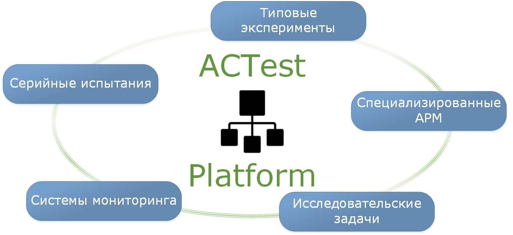
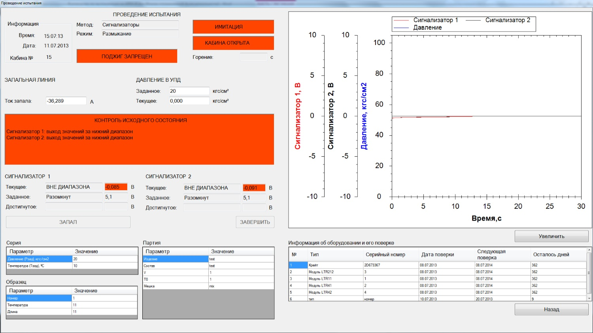
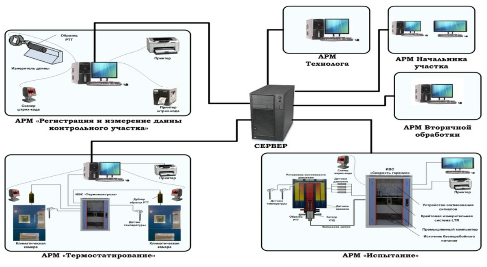

Основными особенностями ACTestPlatform являются: - Поддержка измерительного оборудования различных производителей за счет расширяемой библиотеки модулей сопряжения с устройствами; - Поддержка систем единого времени для приведения измерительной информации к единой шкале времени; - Возможность построения систем на основе распределенных вычислений за счет модулей сетевого взаимодействия; - Возможность централизованного запуска системы с одного рабочего места; - Широкий спектр возможностей обработки сигналов за счет встроенных математических функций, расширяемой математической библиотеки и модуля градуировок сигналов; - Обмен данными с другими системами по стандартизованному протоколу OPC DA. Прикладная программа определения скорости горения ACTestBurRat – это пример заказного программного обеспечения на базе ACTestPlatform, в котором для реализации требуемой функциональности были разработаны: - База данных объектов испытаний; - Специализированный пользовательский интерфейс; - Система контроля и проверок; - Детальные отчёты.
Данная комплексная автоматизированная система измерения скорости горения энергетических конденсированных систем была разработана для ФГУП ФЦДТ “Союз” и предназначена для автоматизации всего технологического процесса подготовки и проведения испытания образцов на скорость горения, управления информационными потоками комплексной автоматизированной системы, включающей ряд автоматизированных рабочих мест (АРМ).
Сервер участка предназначен для хранения данных измерений, отчетов со всех АРМ и настроек АРМ. На сервере размещается база данных технологического участка, доступная для каждого АРМ.